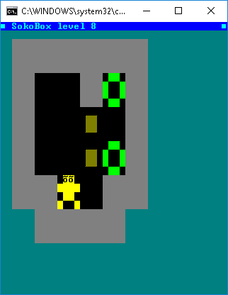

Hello
Round 2012 I published a batch game called Sokobox that used my tool bg, in this same forum.
But the code stop working ok on windows 10, mainly because outdated internal code of bg, very old version (2.7) when windows 10 still did not exist.
I read yesterday about this old batch game in this page: https://www.thebateam.org/2017/05/the-s ... azing.html
Thus, I'be remastered a little bit the code for works okay on windows 10 with the latest version of bg (3.9)
And changing a little colors.
I publish this new Sokobox version 1.4 only for fun.

Here inside the bg utility is the updated batch game:
https://github.com/carlos-montiers/cons ... 1/bg39.zip
Also appear as a backgrund image of my bg tool: https://github.com/carlos-montiers/cons ... /master/bg
I hope batch users can continue getting fun with this batch game.
BatchGame Sokobox 1.4
Moderator: DosItHelp
-
CirothUngol
- Posts: 44
- Joined: 13 Sep 2017 18:37
Re: BatchGame Sokobox 1.4
When did Win10 compatibility start for BG? I'm currently using a lightly custom BG v3.0a (with Color command from tinyBG included), but don't have access to a Win10 machine. Should I use v3.9 to assure compatibility?
Love the FCprint command! Really speeds up the 1-2 punch of Locate+Print. Just did a speed test and 3.9 is within a millisecond per iteration of 3.0, and not having to call twice should speed things up nicely... looks like I'll be migrating to v3.9 regardless.
I played HexNuts v1.3 all the way to level 60-something. Ran into a level I simply could not get through, even remember asking you if it was solvable (you assured me it was). Probably time to take another stab at it, and this time everything is 4x larger! Good news for these tired ol' eyes. ^_^
Thanks for providing this (supposedly) final version of BG, Carlos!
Love the FCprint command! Really speeds up the 1-2 punch of Locate+Print. Just did a speed test and 3.9 is within a millisecond per iteration of 3.0, and not having to call twice should speed things up nicely... looks like I'll be migrating to v3.9 regardless.
I played HexNuts v1.3 all the way to level 60-something. Ran into a level I simply could not get through, even remember asking you if it was solvable (you assured me it was). Probably time to take another stab at it, and this time everything is 4x larger! Good news for these tired ol' eyes. ^_^
Thanks for providing this (supposedly) final version of BG, Carlos!
-
CirothUngol
- Posts: 44
- Joined: 13 Sep 2017 18:37
Re: BatchGame Sokobox 1.4
I was migrating my current project from BG.EXE v3.0a to v3.9 when I noticed this issue.
The FCPrint command for BG v3.9 seems to use the format:
columns rows color text...
However, the docs for BG v3.9 state:
rows columns color text...
which is also what all previous versions of BG [Locate rows columns] use, including v3.9.
Also, unlike ECHO and BG Print, BG FCPrint doesn't 'wrap-around' to the next line when printing text longer than the console's character width... I was unsure if this was intentional.
Thanks again for the new functionality. FCPrint often took the place of 2 or 3 other BG commands in my script (so it runs much faster overall), and since it was always already being called at least once for 'BG Locate' I don't even mind the exclusion of the 'Color' command (which allowed using the faster 'BG Locate' + SET/P instead of 'BG Locate' + 'BG Print Color').
Edit: The docs under FCPrint state "The column is fixed."
Now I get it. ^_^
(wait... wouldn't that be 'row is fixed'?)
The FCPrint command for BG v3.9 seems to use the format:
columns rows color text...
However, the docs for BG v3.9 state:
rows columns color text...
which is also what all previous versions of BG [Locate rows columns] use, including v3.9.
Also, unlike ECHO and BG Print, BG FCPrint doesn't 'wrap-around' to the next line when printing text longer than the console's character width... I was unsure if this was intentional.
Thanks again for the new functionality. FCPrint often took the place of 2 or 3 other BG commands in my script (so it runs much faster overall), and since it was always already being called at least once for 'BG Locate' I don't even mind the exclusion of the 'Color' command (which allowed using the faster 'BG Locate' + SET/P instead of 'BG Locate' + 'BG Print Color').
Edit: The docs under FCPrint state "The column is fixed."
Now I get it. ^_^
(wait... wouldn't that be 'row is fixed'?)
Re: BatchGame Sokobox 1.4
@CirothUngol:
Bg support to windows 10 begin on version 3.5, that fixed a problem on windows 10 related to font function.
But Bg version 3.9 also fix a problem related to print function, in which was neccesary convert the oem escape sequences to unicode, it was works okay on windows 8, but not on windows 10.
Thus, the full support to windows 10, is in the version 3.9.
About the unsolvable level: "sokobox" have the same levels that the old "hexnuts", please can you tell me the exact level between 60 and 70 that you would like to know the solution. I solved that levels because I currently playing the level 125.
About the FCPrint command in the version 3.9, you are right. The documentation is correct but the implementation have that little equivocation.
The column is fixed, meaning that when you include the \n escape sequence the next character will appear in the next row, but not in the column 0 neccesarily, but in the column specified when you call the function.
Note: I published a second edition of the version 3.9, called "3.9 se".
It implement the FCPrint correclty according to the documentation, and also have a little changes.
The link is the same and the archive have the same name: "bg39.zip" but you can difference from the old because the new contains inside a readme.txt with this text:
Thanks for the interest.
Bg support to windows 10 begin on version 3.5, that fixed a problem on windows 10 related to font function.
But Bg version 3.9 also fix a problem related to print function, in which was neccesary convert the oem escape sequences to unicode, it was works okay on windows 8, but not on windows 10.
Thus, the full support to windows 10, is in the version 3.9.
About the unsolvable level: "sokobox" have the same levels that the old "hexnuts", please can you tell me the exact level between 60 and 70 that you would like to know the solution. I solved that levels because I currently playing the level 125.
About the FCPrint command in the version 3.9, you are right. The documentation is correct but the implementation have that little equivocation.
The column is fixed, meaning that when you include the \n escape sequence the next character will appear in the next row, but not in the column 0 neccesarily, but in the column specified when you call the function.
Note: I published a second edition of the version 3.9, called "3.9 se".
It implement the FCPrint correclty according to the documentation, and also have a little changes.
The link is the same and the archive have the same name: "bg39.zip" but you can difference from the old because the new contains inside a readme.txt with this text:
Yes, also I suppose that version "3.9 se" is the final version.This package contains the programs of BG 3.9 se (second edition).
Thanks for the interest.
-
CirothUngol
- Posts: 44
- Joined: 13 Sep 2017 18:37
Re: BatchGame Sokobox 1.4
Thanks for supporting BG so that it remains so very useful, hopefully you may deign to again release a fix if any future windows changes render it ineffective. I've been using it for many years and it remains the best all-inclusive command line app for full batch control of the windows console that I know of. You were even able to reduce the size of the executable by another kByte (a full 1024 bytes)... nice.
BG FCPrint has worked amazingly well in my current project! It literally doubled or tripled the speed of a full-color option that I had added, making the animation far more pleasing.
I literally haven't played it in years... yet. I'll probably start over on Sokobox at level 1 and work my way back up. Don't worry, I'll surely be asking you for some tips when I get stuck. Level 125? I got some catching up to do. ^_^...can you tell me the exact level between 60 and 70 that you would like to know
I still like the ultra-simplistic look of HexNuts, though. So tiny!